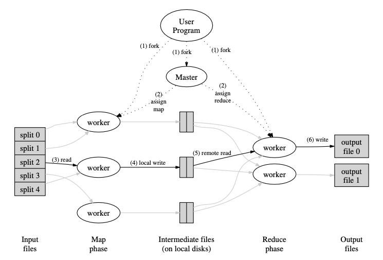
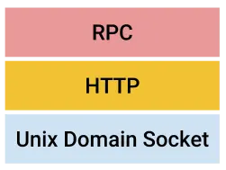
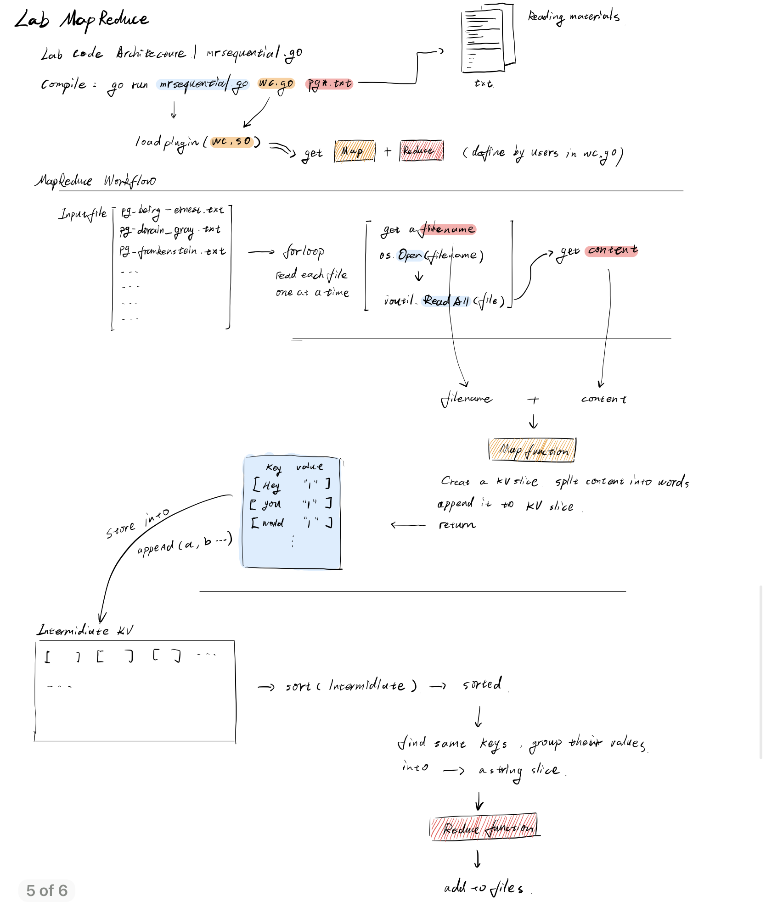
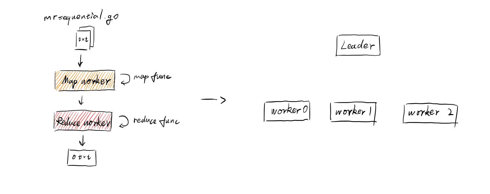
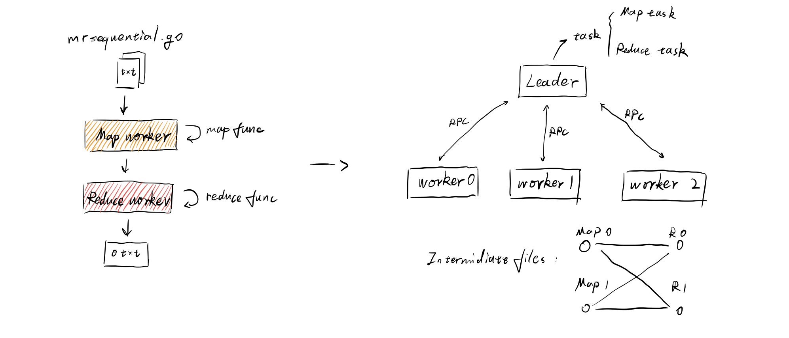
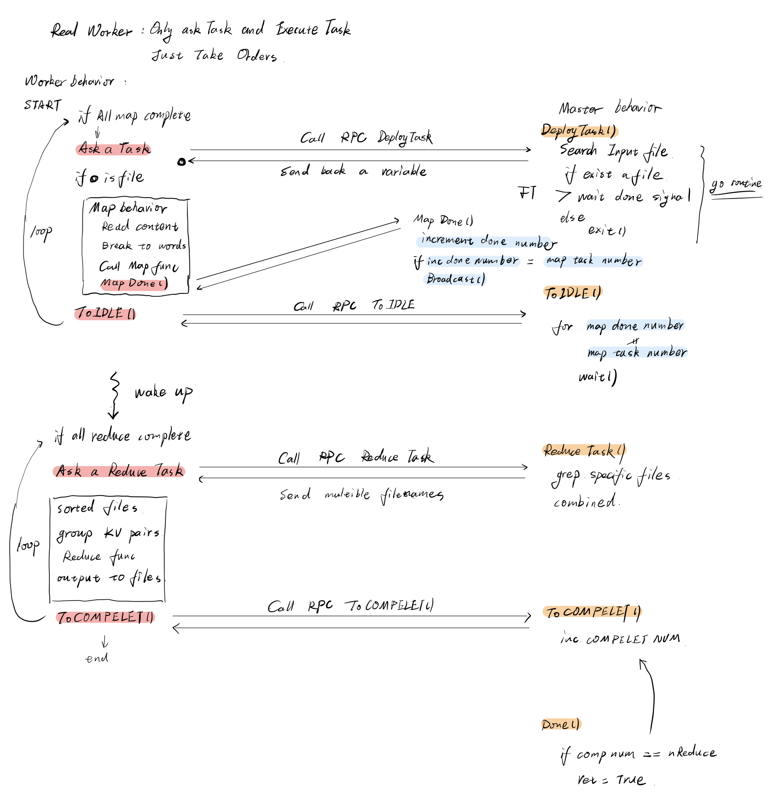
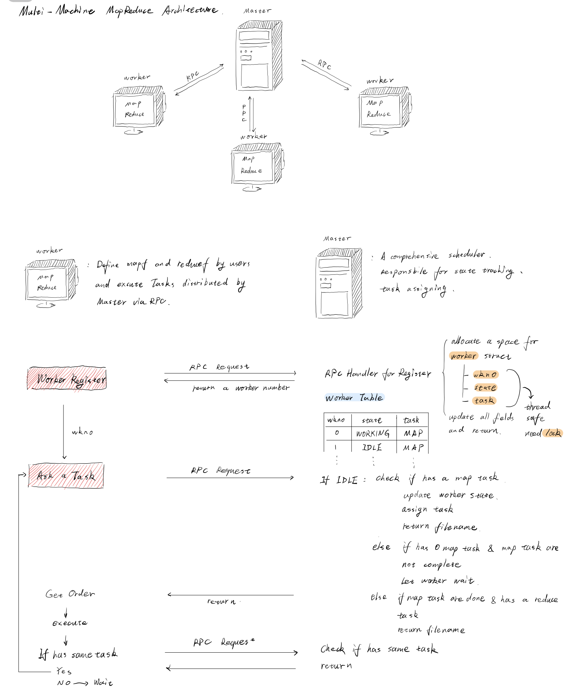
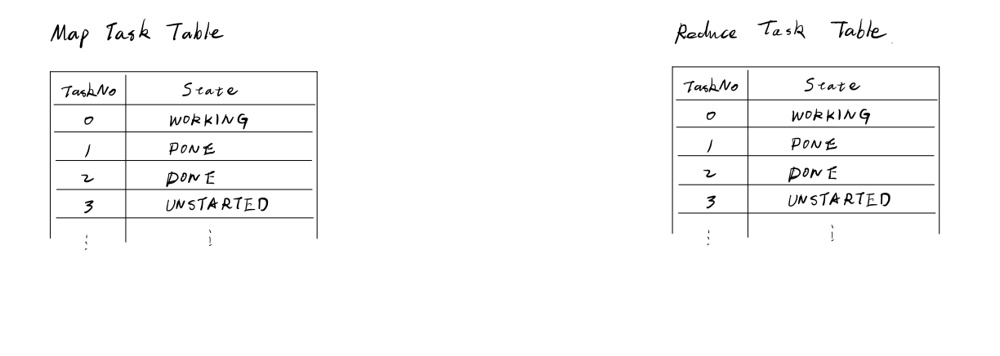
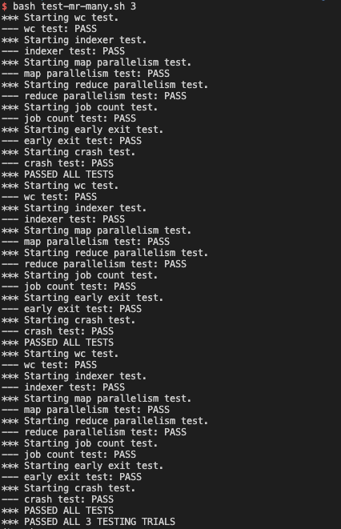

MapReduce Implementation
Introduction
Google的研发人员在过去处理大数据任务时，经常需要手写实现很多不同的拥有特定功能的程序，比如爬去文档、网络日志等等。这些任务经常需要将任务分布到很多台计算机处理，以提升处理的性能和速度；但在这个前提下，如何实现并行、分布数据、处理异常机器和失败的任务、保证系统正确运行是一个较为复杂和综合性的问题。
为了解决这样的问题，Google的研发人员开发了一套系统——Mapreduce。它可以为程序员屏蔽掉这些复杂性，让写代码的过程中专注于逻辑的实现，系统内部则负责并行、并发、数据控制能复杂的问题。
Mapreduce的本质是一种编程模型，它主要面向集群计算机处理大型数据分布式计算而设计。用户在使用Mapreduce的时候，需要指定一个可以处理KV pair的名为map函数，该函数会把输入的KV pair处理输出为中间层的KV pair；然后再指定一个名为reduce的函数，来将中间的KV pair相同的key合并起来，产生最后的输出。程序员写的这种程序底层自动实现了并行和在大集群计算机上的部署。
Programming Model
模型的输入是一系列KV pair，并且产生另一系列的KV pair。Mapreduce库的使用者只需要关注实现两个函数：Map和Reduce。
Map函数：输入一个KV pair，输出一个由中间KV pair组成的集合。Mapreduce会将由相同中间Key的值的组合起来，传递给Reduce函数。
Reduce函数：接收中间的KV pair作为输入，合并相同Key值的pair，输出一个更小的集合。
Example
如果需要对大文件中每个单词出现的次数做统计，可以写出下面的伪代码：
func map(string key, string value):
// key: document name
// value: document contents
for each word w in value:
EmitIntermediate(w, "1")
func reduce(string key, iterator values):
// key: a word
// values: alist of counts
result := 0
for each v in values:
result += ParseInt(v)
Emit(AsString(result))Types
map (k1, v1) -> list(k2, v2)
reduce(k2, list(v2)) -> list(v2)用户提供的map和reduce函数需要遵循一定的类型。输入的KV pair于map的输出的KV pair是不同domain的。而中间KV pair和输出属于同样的domain。
Implementation
Execution Overview

上图展现了Mapreduce的基本工作原理。
首先，map函数分布在不同worker计算机上，它会自动将输入的数据分为M个splits。Input splits可以被不同机器并行处理。Reduce函数使用partitioning函数（例如，hash（key）mod R）将每一个map worker产生的中间KV pair分成R片。R的数量以及partitioning函数由用户指定。
Mapreduce的工作流如下：
- Mapreduce首先在User Program中将输入文件分成16MB-64MB大小的M个数据段。然后在集群中fork User Program给每一台机器。
- 再众多机器中，只有一个机器被标记为Master，剩余的都是Worker。有M个Map任务和R个Reduce任务等待分配。Master会选择一个空闲的Worker分配其中一个任务。
- 被分配Map任务的Worker会读取对应的input split的内容。它会解析输入数据，得到key/value pair，并且将它传递给每一个用户定义的Map函数中。然后Map函数会产生中间KV pair，最后缓存在内存里。
- 内存中的pairs会周期性的写到本地磁盘中，并且会被partitioning函数分成R个数据段。这些在本地磁盘中存储的pairs的地址会被发送到Master，Master随后负责把这些地址传递给执行Reduce任务的Worker。
- 当执行Reduce任务的Worker接收到Master发送的文件地址之后，Worker使用RPC来从Map Worker中根据地址读取本地磁盘上的数据。当一个Reduce Worker读取完毕属于它的中间数据后，它会根据中间key值对其进行排序，这样就可以把相同键值的数据聚集到一起（排序是必须的，因为会有很多不同的keys分配到一个Reduce Worker）。
- Reduce Worker对排序后的中间数据迭代，对于每一个遇到的新的key值，Worker会将key和对应的value传递给用户定义的Reduce函数。Reduce函数的输出会追加到最后输出文件中。
- 当所有的map任务和reduce任务完成后，Master会唤醒User Program。这就完成了一次Mapreduce的使用。
Master Data Structures
Master需要维护几个数据结构。对于每一个map任务和reduce任务，它需要存储任务的状态，以及能够识别worker机器的identity。Master童谣需要存储每一个map任务完成后，中间文件的位置和大小。
Unix Domain Socket
现实世界中两个人进行信息交流的整个过程被称作一次通信（Communication），通信的双方被称为端点（Endpoint）。工具通讯环境的不同，端点之间可以选择不同的工具进行通信，距离近可以直接对话，距离远可以选择打电话、微信聊天。这些工具就被称为 Socket。
同理，在计算机中也有类似的概念：在 Unix 中，一次通信由两个端点组成，例如 HTTP 服务端和 HTTP 客户端。端点之间想要通信，必须借助某些工具，Unix 中端点之间使用 Socket 来进行通信。
Socket 原本是为网络通信而设计的，但后来在 Socket 的框架上发展出一种 IPC 机制，就是 UDS。Unix Domain Socket（UDS，Unix 域套接字），它还有另一个名字叫 IPC（inter-process communication，进程间通信）。
使用 UDS 的好处显而易见：不需要经过网络协议栈，不需要打包拆包、计算校验和、维护序号和应答等，只是将应用层数据从一个进程拷贝到另一个进程。这是因为，IPC 机制本质上是可靠的通讯，而网络协议是为不可靠的通讯设计的。
UDS 与网络 Socket 最明显的区别在于，网络 Socket 地址是 IP 地址加端口号，而 UDS 的地址是一个 Socket 类型的文件在文件系统中的路径，一般名字以 .sock 结尾。
这个 Socket 文件可以被系统进程引用，两个进程可以同时打开一个 UDS 进行通信，而且这种通信方式只会发生在系统内核里，不会在网络上进行传播。
Go中使用Unix Domain Socket
我们从一个简单例子开始，使用Go监听Unix域套接字：
import (
"io"
"log"
"net"
"os"
)
const SockAddr = "/tmp/echo.sock"
func echoServer(c net.Conn) {
log.Printf("Client connected [%s]", c.RemoteAddr().Network())
io.Copy(c, c)
c.Close()
}
func main() {
if err := os.RemoveAll(SockAddr); err != nil {
log.Fatal(err)
}
l, err := net.Listen("unix", SockAddr)
if err != nil {
log.Fatal("listen error:", err)
}
defer l.Close()
for {
// Accept new connections, dispatching them to echoServer
// in a goroutine.
conn, err := l.Accept()
if err != nil {
log.Fatal("accept error:", err)
}
go echoServer(conn)
}
}UDS通过文件系统中的路径进行识别；对于服务器端代码，我们使用/tmp/echo.sock。以上代码从删除这个文件开始，如果文件存在说明已经有服务在监听会报错。
当服务器关闭时，表示套接字的文件可以保留在文件系统中，除非服务停止后自动清理。如果我们用相同的套接字路径重新运行另一个服务器，会得到以下错误:
2021/10/20 23:23:24 listen error:listen unix /tmp/echo.sock: bind: address already in use为了防止这种情况，服务端首先删除套接字文件(如果存在的话)。
我们可以在Go中编写一个简单的客户端，它连接到服务器，发送消息，等待响应并退出。客户端代码如下：
package main
import (
"io"
"log"
"net"
"time"
)
func reader(r io.Reader) {
buf := make([]byte, 1024)
n, err := r.Read(buf[:])
if err != nil {
return
}
println("Client got:", string(buf[0:n]))
}
func main() {
c, err := net.Dial("unix", "/tmp/echo.sock")
if err != nil {
log.Fatal(err)
}
defer c.Close()
go reader(c)
_, err = c.Write([]byte("hi"))
if err != nil {
log.Fatal("write error:", err)
}
reader(c)
time.Sleep(100 * time.Millisecond)
}我们可以看到，编写UDS服务器和客户端与编写常规套接字服务和客户端非常相似。唯一的不同就是必须传入“unix”作为网络类型参数到net.Listen和net.Dial中。其余代码都是一样的。显然，这使得编写通用的服务端和客户端代码变得非常容易，这些代码与所使用的套接字的实际类型无关。
基于UDS实现HTTP和RPC协议
网络协议如HTTP和各种形式的RPC，并不特别关心网络栈的底层是如何实现的，只要能对一些功能保持一致就可以。Go标准库自带rpc包，使得实现RPC服务器和客户端变得非常简单。下面是一个使用UDS实现简单的服务器:
const SockAddr = "/tmp/rpc.sock"
type Greeter struct {
}
func (g Greeter) Greet(name *string, reply *string) error {
*reply = "Hello, " + *name
return nil
}
func main() {
if err := os.RemoveAll(SockAddr); err != nil {
log.Fatal(err)
}
greeter := new(Greeter)
rpc.Register(greeter)
rpc.HandleHTTP()
l, e := net.Listen("unix", SockAddr)
if e != nil {
log.Fatal("listen error:", e)
}
fmt.Println("Serving...")
http.Serve(l, nil)
}注意，我们使用的是rpc服务器的HTTP版本。它用HTTP包注册一个HTTP处理程序，实际的服务使用标准HTTP.serve完成。这里的网络栈看起来像这样:

这里提供了一个可以连接到上面所示服务器的RPC客户端。它使用标准的rpc.Client.Call方法连接到服务器。
package main
import (
"fmt"
"log"
"net/rpc"
)
func main() {
client, err := rpc.DialHTTP("unix", "/tmp/rpc.sock")
if err != nil {
log.Fatal("dialing:", err)
}
// Synchronous call
name := "Joe"
var reply string
err = client.Call("Greeter.Greet", &name, &reply)
if err != nil {
log.Fatal("greeter error:", err)
}
fmt.Printf("Got '%s'\\n", reply)
}Go plugin
mrapps文件夹中定义了很多有关于mapreduce的应用程序，最开始的一个测试用例就是wc.go（word
counter），用于统计众多txt文件下不同词汇出现的频率。wc.go中只定义了Map和Reduce两个函数，它作为go的插件被用到了Mapreduce库中。需要使用如下命令构建：
go build -buildmode=plugin ../mrapps/wc.go构建会生成一个wc.so文件（动态链接库，因为是个插件，会在运行时被调用）。这个插件需要与mrworker.go文件共同编译运行：
go run mrworker.go wc.somrworker.go中存在一个加载插件的代码，会提取出wc.go文件中定义的两个函数：
//
// load the application Map and Reduce functions
// from a plugin file, e.g. ../mrapps/wc.so
//
func loadPlugin(filename string) (func(string, string) []mr.KeyValue, func(string, []string) string) {
p, err := plugin.Open(filename)
if err != nil {
log.Fatalf("cannot load plugin %v", filename)
}
xmapf, err := p.Lookup("Map")
if err != nil {
log.Fatalf("cannot find Map in %v", filename)
}
mapf := xmapf.(func(string, string) []mr.KeyValue)
xreducef, err := p.Lookup("Reduce")
if err != nil {
log.Fatalf("cannot find Reduce in %v", filename)
}
reducef := xreducef.(func(string, []string) string)
return mapf, reducef
}RPC框架分析
Lab中的rpc框架使用的是go语言自带的net/rpc库，并采用unix domain socket
+ http的方式，建立起单机上服务器与客户端之间的rpc通信。既然使用了unix
domain
socket的方式，我们就需要创建一个文件作为通讯的基础。源代码中使用定义在rpc.go文件中的函数coordinatorSock()作为产生文件名的封装。
// Cook up a unique-ish UNIX-domain socket name
// in /var/tmp, for the coordinator.
// Can't use the current directory since
// Athena AFS doesn't support UNIX-domain sockets.
func coordinatorSock() string {
s := "/var/tmp/824-mr-"
s += strconv.Itoa(os.Getuid())
return s
}接下来我们就需要两个东西，一个是服务器，另一个就是客户端。服务器负责通过UDS监听可能的请求，客户端负责向服务器发出RPC申请。服务器的代码定义在coordinator.go的server()函数中。
// start a thread that listens for RPCs from worker.go
func (c *Coordinator) server() {
rpc.Register(c)
rpc.HandleHTTP()
//l, e := net.Listen("tcp", ":1234")
sockname := coordinatorSock()
os.Remove(sockname)
l, e := net.Listen("unix", sockname)
if e != nil {
log.Fatal("listen error:", e)
}
go http.Serve(l, nil)
}这个函数被MakeCoordinator()调用，进一步被mrcoordinator.go调用，负责创建一个master。
Worker作为客户端，需要提出RPC请求。这个被定义在worker.go文件的call()函数中。
// send an RPC request to the coordinator, wait for the response.
// usually returns true.
// returns false if something goes wrong.
func call(rpcname string, args interface{}, reply interface{}) bool {
// c, err := rpc.DialHTTP("tcp", "127.0.0.1"+":1234")
sockname := coordinatorSock()
fmt.Println(sockname)
c, err := rpc.DialHTTP("unix", sockname)
if err != nil {
log.Fatal("dialing:", err)
}
defer c.Close()
err = c.Call(rpcname, args, reply)
if err == nil {
return true
}
fmt.Println(err)
return false
}mrsequential.go分析
mrsequential.go文件与实验需要实现的东西没有关系，这个只是做了一个完整的mapreduce流程的演示（线性执行）。可以运行如下指令观察mapreduce的输出：
$ cd src/main
$ go build -buildmode=plugin ../mrapps/wc.go
$ rm mr-out*
$ go run mrsequential.go wc.so pg*.txt
$ more mr-out-0了解这个源代码是有必要的，可以帮助我们后续实现分布式的Mapreduce提供指导。

上面的图片提供了一个对mrsequential.go运行流程的一个叙述。在理解Mapreduce任务的过程中，需要区分一些概念：Map
worker和Map function以及Reduce worker和Reduce
function是两个不同的概念，Map function和Reduce
function只是worker的一个子集，只能完成一小部分的任务，剩下的一些重要工作是由worker内部的代码完成的。
Distributed MapReduce Design
通过阅读实验手册Your
Job的第一段，我们可以分析一波。手册中说，运行过程中只有一个coordinator进程，以及多个并行运行的worker进程。从上面的mrsequential.go中，只有一个coordinator和一个worker（也可以说基本没有coordinator，coordinator的存在就是管理workers的，如果只有一个worker，不存在管理的问题）。它们之间交互很单纯，读取文件，调用插件的map和reduce函数，输出到文件。
但是如果有多个worker，就不能这么写了。需要一个领导者来做任务分发和统筹规划，一堆工人做简单重复性的工作。但是如果由单一的worker架构进化成coordinator-workers架构，需要解决什么问题呢？

我们可以先简单的列举一下：
- 通信问题：coordinator如何才能和workers实现通信
- 任务界定：在
mrsequential.go中，都是在main函数写的，但如果想要实现Map worker和Redcue worker，它们分别完成哪部分任务需要明确一下 - intermediate文件存储：这个文件存储到哪里
实验手册中说，worker可以通过RPC的方式实现与Coordinator的通信。进一步讲，每一个worker进程需要像coordinator索要任务，这个任务有两种：
- Map任务
- Reduce任务
一个任务的行为可以界定为：从一个或者多个文件中读取数据，执行任务，将任务的输出保存到一个或多个文件中（Map任务和Reduce任务有相同的表现）。这里可以说明，worker负责索要任务，coordinator通过RPC分发任务。Coordinator需要知道worker是否指定时间完成任务，如果没有，认定worker出现故障，应当将相同的任务分发给不同的worker。
通过阅读实验手册，我们可以得知，每一个Map任务结束后需要将输出的KV pair分到nReduce个intermediate file中，intermediate file需要存储到当前路径下，并且命名规则为mr-X-Y，其中X为Map任务的序号，Y为Reduce任务的序号。比如有两个Map任务，指定有2个Reduce任务，那么就会产生4个文件，分别为mr-0-0，mr-0-1，mr-1-0，mr-1-1。
解决了上面的三个问题。

实验过程
我首先从第二个Hints开始入手，先做个任务分解。
- 修改Worker()，发送一个RPC请求，向coordinator申请一个任务。
- 修改coordinator，回应一个没有开始map task的文件名。
- 修改worker，读取这个文件，调用Map函数，就和mrsequential.go中的一样。
可以先观察一下看看worker.go的CallExample()是如何实现RPC调用的。刚开始的想法很简单，简单实现一个直接询问Coordinator要一个文件名。为了符合RPC的定义，观察了example代码后，在rpc.go中定义了如下结构：
type TaskAsk struct{}
type TaskReply struct {
taskNo int
filename string
}在worker.go实现了简单的AskTask()函数
// ask for a map task to the coordinator
func AskTask() {
// declare an argument
args := TaskAsk{}
// declare a task reply structure
reply := TaskReply{}
ok := call("Coordinator.DeployTask", &args, &reply)
if ok {
fmt.Println("receive file")
} else {
fmt.Printf("call failed!\\n")
}
}接下来就需要考虑coordinator端如何实现了。我首先想到的第一个问题是，如何记录所有的txt文件名？文件名还需要有个是否被分配的标记，文件路径等等元数据。这些其实都是需要Coordinator管理和安排的东西。我们可以先实现一个文件管理的struct，然后记录到Coordinator中去。
type FileStatus struct {
filename string
allocate int
}
type Coordinator struct {
// Your definitions here.
files []FileStatus
}Coordinator需要在MakeCoordinator()函数中初始化。那么所有的txt文件都在main文件夹下，下一步任务就是如何读取这个文件夹下有关的文件。首先实现一个函数，从main文件夹下读取txt后缀的所有文件。
// get the specify ext, e.g., ".txt", in dirpath directory
func GetFile(dirpath string, exts string) []string {
dirs, err := os.ReadDir(dirpath)
if err != nil {
fmt.Println("ReadDir Error:", err)
}
txtFiles := make([]string, 0)
for _, entry := range dirs {
if ext := filepath.Ext(entry.Name()); ext == exts {
txtFiles = append(txtFiles, entry.Name())
}
}
return txtFiles
}进一步在MakeCoordinator()部署。
// create a Coordinator.
// main/mrcoordinator.go calls this function.
// nReduce is the number of reduce tasks to use.
func MakeCoordinator(files []string, nReduce int) *Coordinator {
c := Coordinator{}
// Your code here.
txtFiles := GetFile("../main", ".txt")
fmt.Println(txtFiles)
for _, txtf := range txtFiles {
fs := FileStatus{}
fs.filename = txtf
fs.status = 0
c.files = append(c.files, fs)
}
c.server()
return &c
}实现另一个定义在Coordinator下的rpc函数，这个函数有可能需要实现很复杂的调度逻辑，不过这里先不考虑，目标是先实现功能。
// RPC deploy task
// provide a task for a worker
// taskNo == 1: map task
// taskM0 == 2: reduce task
func (c *Coordinator) DeployTask(args *TaskAsk, reply *TaskReply) error {
reply.TaskNo = 1
if reply.TaskNo == 1 {
for _, f := range c.files {
if f.status == 0 {
fmt.Println("Found a unstarted file, deploying...")
reply.Filename = f.filename
break
}
}
}
return nil
}接着，我们在终端重新build一下插件，并且开启服务器和客户端
// server
go build -buildmode=plugin ../mrapps/wc.go
go run mrcoordinator.go pg-*.txt
// client
go run mrworker.go wc.so接下来我粗略的根据一些实验结果和手册上的指导，考虑了一下整体思路（忽略Fault tolerance和crash safety等不谈）：

首先我把Worker和Master抽象成两个个体，并且做出明确的规定：
Worker的工作
- RPC申请任务
- RPC告知任务结束
- RPC告知工作状态
除此之外什么权力都没有。
至于Master，则负责任务的调度、分发以及workers状态的更换和记录。这里的框架考虑了多个worker的并发。
对于一个Worker来说，首先要执行的就是申请一个Map任务。Master收到RPC请求后，去input file list里搜寻还没有被分配的文件（allocate标志位）。如果找到，就返回文件名字，如果没有，返回一个特殊的字符串。通过RPC调用返回。
下一步，Worker对返回的结果做出判断。如果返回结果不是文件，那么说明当前已经没有文件可以作为输入了，Worker不能退出，进入IDLE状态（调用RPC
ToIDLE）。如果存在文件，那么就对相应文件进行处理，然后调用RPC
MapDone，增加一个Master端的全局变量（用于统计Map任务完成的数量）。MapDone还有一个任务是通知DeployTask的一个协程，表示完成了对应任务。
调用ToIDLE的Worker，Master会把对应Worker的状态变为idle，可以被继续调用。ToIDLE被唤醒有两种情况，一种是当所有任务执行完，广播式唤醒，唤醒之后由于for
loop的存在，会判断一下所有的map任务是否完成，如果全部完成，就会break当前的loop，跳到Reduce
part的代码。如果ToIDLE被单个进程唤醒，说明产生了一个Fault
tolerance情况，意味着某部分产生异常，需要借助此worker重新执行一下，这部分先不考虑。
由于Map part的for loop结束，代码进入了Reduce part。首先申请一个Reduce Task。Master会根据相应的分配规则，把n个文件名分配并返回。接着，Reduce part代码完成对应工作，产生输出文件。每一个流程完成后，调用ReduceDone，告知Master这个RPC协程完成了（为了Fault tolerance）。再调用ToCOMPELET，更改一个Master端的全局变量（记录Reduce任务的进度），如果Reduce任务全部完成，因为Master会周期性检查Done函数，就可以直接结束任务。
以上是单机情况下，通过不同协程模拟不同的worker。但是实际上，每一个worker都需要独立运行在一个机器上。因此想要真正模拟这个过程，就需要实现一个多机情况下的MapReduce。


经过调试，成功实现了Mapreduce，下面是通过所有测试的截图。

MapReduce Optimize
当前系统代码实现的问题
- 状态标识位太多太杂，且不成体系，全部用int表示，代码可读性不高
- 当前实现的任务调度策略是线性遍历task table，找到任务标识位为unstarted的任务执行。但当任务很多的时候，每次分配任务都要遍历一次table，并不高效。需要重新设计任务调度结构
- 当前的实现在解决worker crash问题上，采用的是把内存当作temporary文件的方式，也就是说所有的中间数据是放在内存中的。还好测试的文件数据量不大，如果数据量过大，内存会爆。所以需要实现tempfile
- 另外，mapreduce论文中的fault tolerance，refienments，performence的大部分内容都没有阅读以及理解透彻，可以具体实现或者测试一下，做一些实验和记录
Fault Tolerance
Worker failure的情况：当一个worker failure时，已经完成的任务需要重新执行（标记为idle，因为这个worker以及failure了，而且map生成的文件存储在machine本地，所以这部分中间文件不能再被访问，因此master需要把这些任务重置，给其他可以工作的worker执行），未完成的任务则直接终止，并master将其标记为idle。
Master failure的情况：可以周期性做checkpoint备份。
因为mapreduce是一个分布式系统，为了确保分布式执行的结果与顺序执行的结果完全一致，作者采用原子提交的方式保证。每一个在执行中的任务都仅仅在临时文件中写。
如果一个map完成，这个worker会把自己的R个临时文件名发送给master。如果master接收的这个完成的任务已经被其他worker完成，直接忽略该消息。否则，master将这R个文件名记录下来。
如果一个reduce任务完成，reduce的worker自动将临时文件命名为最后的文件。如果相同的reduce任务在不同的worker上同时执行，底层的文件系统会确保只有一个文件会被命名，也只允许一个文件存在。
Locality
因为网络带宽是一个稀缺资源，大部分的数据会从附近的节点或者server中读取（GFS做保证）。
Backup Tasks
Straggler：一台机器会在完成最后几个map或者reduce任务的时候变的很慢。
原因：
- 磁盘出现问题，读写性能急剧下降
- CPU不停的在切换context
- 其他系统的bug发病
解决方法：当mapreduce操作接近完成时，会把剩余的任务复制一个backup，执行。与当前的任务并行执行。不管是backup任务还是当前的执行的任务，只要有一个先执行完，就标志该任务执行结束。相当于是让多匹马同时赛跑，选最快的那个作为结果。